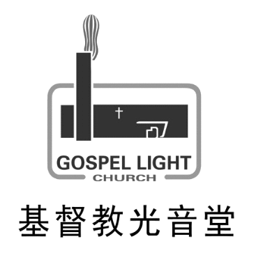

光音堂
教堂简介
基督信仰
主任牧师
联系我们
信仰生活
新人
主日崇拜
团契生活
主日学
主内服侍
唱诗班
初爱敬拜赞美
音控组
摄像组
福音大使
探访组
认识基督
见证奉献
好文推荐
媒体资源
家事园地
每周讲道
事工报告
在线圣经
财务报告
教堂婚礼
登录
退出
光音堂
聚会时间
教堂简介
基督信仰
财务报告
事工报告
联系我们
团契活动
青年团契
夫妻团契
未婚团契
蒙恩团契
长者团契
留言板